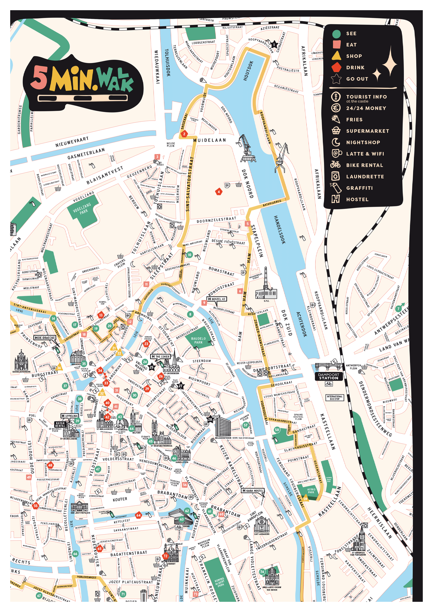

City Gem
fine the gem 💎 in the city
En collaboration avec les cartes Use-it, nous vous présenterons le projet qui permettra aux jeunes voyageurs de visiter la ville comme des locaux. Vous aurez l'occasion de visiter l'ensemble des villes existantes déjà sous forme de cartes papier à commencer par Bruxelles.
Pour tout les utilisateurs qui préfèrent le format digital, tout sera désormais à portée de smartphone !
🤷♂️ qui est use-it ?
“Nous créons des cartes pour les jeunes voyageurs : faites par des locaux, actualisées, non commerciales et gratuites. Pas d'absurdité ni de publicité, juste la vraie vie de la ville.”
Nicolas, commité de direction de use-it
Ils conçoivent des cartes papiers décorées par des artistes locaux, avec des points d'intérêts identifiés par des jeunes habitants. voyageurs en quête de nouveaux endroits à visiter.
carte use-it ville
deghent
Use-it a 8 valeurs qui se corrèlent parfaitement avec celles que je cherchais à montrer dans mon projet et plus encore.
made by locals
we don't work with travel journalists but with locals.
mape are free
you find them in hostels and tourist infos.
young travelers
no 5-star hotels, no fancy dinners.
not commercial
nobody pays to be inclded on the maps.
not a trendy guide
it's about the life and soul of the city.
up-to-date
new editions are made every year.
Use-it c’est un super moyen de trouver de nouvelles choses à faire dans une ville, de trouver des endroits moins connus du grand public mais qui n’en n’a pas moins pleine d’histoire à raconter.
Pour donner vie à ce projet de plusieurs mois, il s’est passé beaucoup de choses, il y a eu des rencontres, de bons et de mauvais choix, des doutes et des succès.
retraçons ensemble toute l’épopée.
ça se passe ici !
sujetRendez-vous en 2024 pour le lancement de City Gem !
à voir aussi